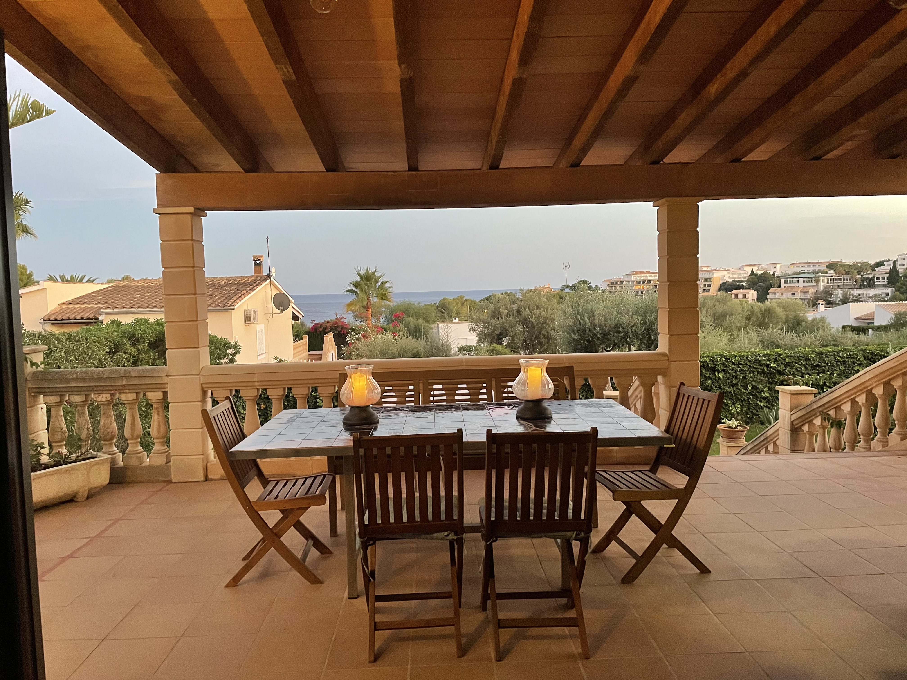
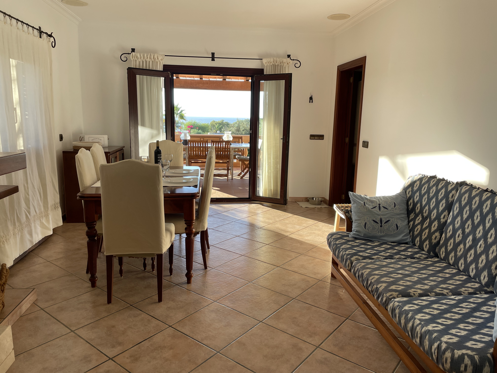
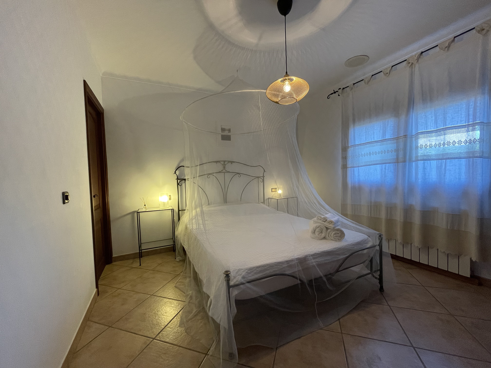

Galería




Can Riera es una casa unifamiliar de unos ~130 m², con vistas al mar y a solo 3 min a pie de las calas Cala Anguila y Cala Mendia. Situada en una zona residencial tranquila y familiar, es perfecta para desconectar con toda la familia (incluidas mascotas).